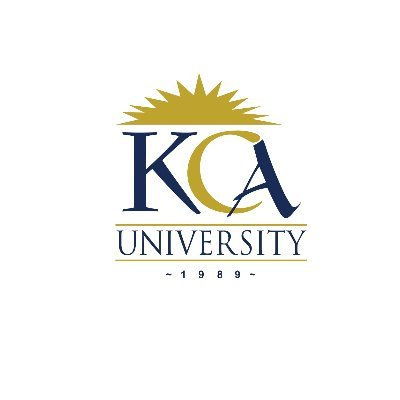

KENYA COLLEGE OF ACCOUNTANCY (KCA)
KCA (address)
Campus Name
Telephone
Email
Ruaraka campus
254 208 070 408/9
corporate@kca.ac.ke
CBD Campus
254 202 211 263/4/8
icad@kca.ac.ke
Western Campus
+254 572 024 094/5
registrarkisumu@kca.ac.ke
Kitengela Campus
+254 715 532 187
registrar@kca.ac.ke
OUR PROGRAMMES
CERTIFICATE PROGRAMMES
Certificate in Banking
Certificate in Business Information Technology
Certificate in Business Management
Certificate in Counselling Psychology
Certificate in Early Childhood Education
Certificate in Film Technology
Certificate in Information technology
Certificate in Performing Arts Theatre and Film
Certificate in Procurement and Logisitics
Certificate in Project Management
Vocational Certificate in Block Chain Technology
Vocational Certificate in Entrepreneurship & Innovation
Vocational Certificate in Graphics Design
Vocational Certificate in Information and Cyber Security
DIPLOMA PROGRAMMES
Diploma Criminology and Criminal Justice Programme Structure
Diploma in Banking
Diploma in Business Information Technology
Diploma in Business Management
Diploma in Computer Networks and Systems Administration
Diploma in Counselling Psychology
Diploma in Data Management & Analytics
Diploma in Early Childhood Education
Diploma in Education
Diploma in Film Technology
Diploma in Information Technology
Diploma in Journalism and Digital Media
Diploma in Performing Arts Theatre and Film
Diploma in Procurement and Logistics
Diploma in Project Management
Diploma in Public Management
PROFESSIONAL PROGRAMMES
ABE
Accounting Technicians Diploma (ATD)
Association of Chartered Certified Accountants (ACCA- UK)
Certificate in Accounting and Management Skills (CAMS)
Certified Information System Auditor (CISA)
Certified Investment and Financial Analysts (CIFA)
Certified Procurement and Supply Professional
Certified Public Accountants (CPA)
Certified Secretaries (CS)
SHORT PROFESSIONAL PROGRAMMES
Accounting Packages
CCNA ( Level 1-3 )
Certificate in Computer Applications
International Certificate of Digital Literacy (ICDL)
Linux (Level 1-3)
Microsoft Office
Statistical Package for Social Sciences (SPSS)
Web Applications and Development
KNEC PROGRAMMES
Craft Certificate in Business Management
Craft Certificate in Food & Bevarages
Craft Certificate in Human Resource Management
Craft Certificate in Information Communication Technology (ICT)
Diploma in Food & Beverages
UNDERGRADUATE PROGRAMMES
Bachelor of Arts Counselling Psychology
Bachelor of Arts in Criminology
Bachelor of Arts in Economics and Business Studies
Bachelor of Arts in Film Technology and Performing Arts
Bachelor of Arts in Journalism and Digital Media
Bachelor of Business Information Technology
Bachelor of Commerce
Bachelor of Education Arts
Bachelor of Education Early Childhood Education
Bachelor of International Business Management
Bachelor of Procurement and Logistics
Bachelor of Public Management
Bachelor of Science in Actuarial Science
Bachelor of Science in Applied Computing
Bachelor of Science In Data Science
Bachelor of Science in Economics & Statistics
Bachelor of Science in Gaming and Animation Technology
Bachelor of Science in Information and Communications Technology
Bachelor of Science in Information Security and Forensics
Bachelor of Science in Information Technology
Bachelor of Science in Software Development
We do not just give students an education and experiences that set them up for success in a career. We help them succeed in their career—to discover a field they are passionate about and dare to lead it. Apply now.
